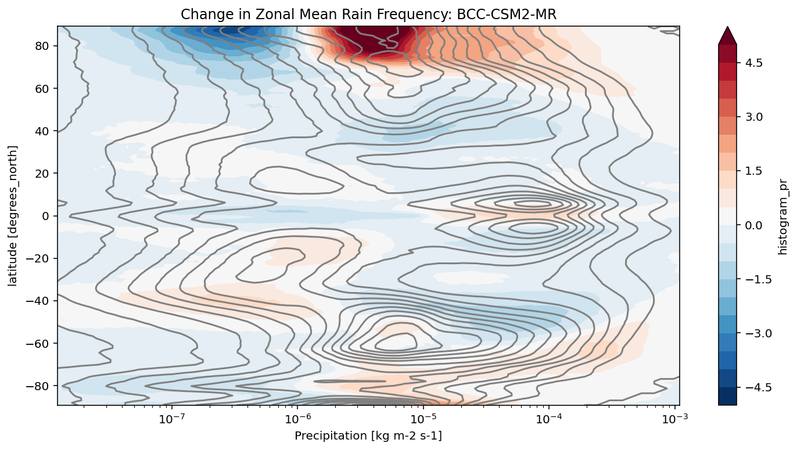
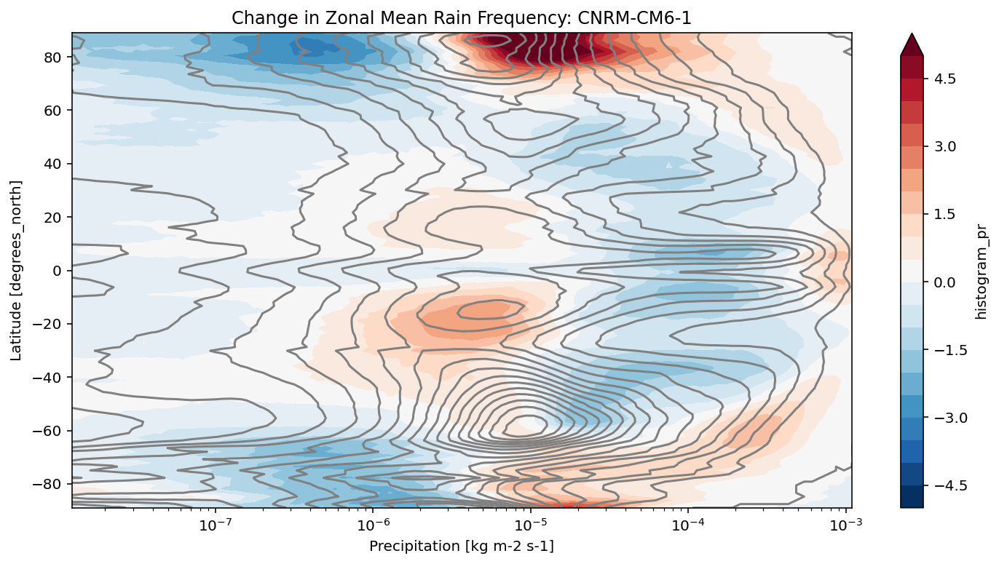
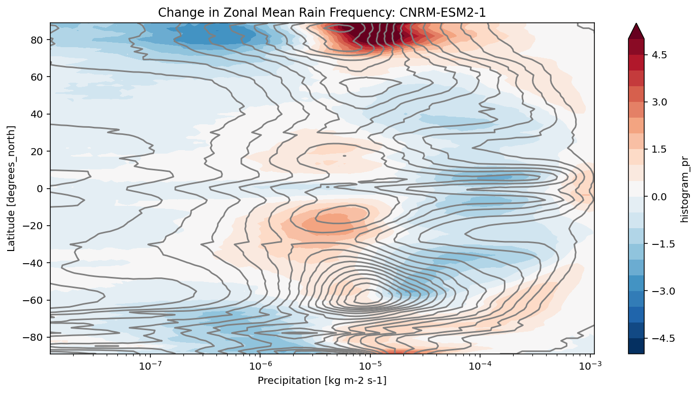
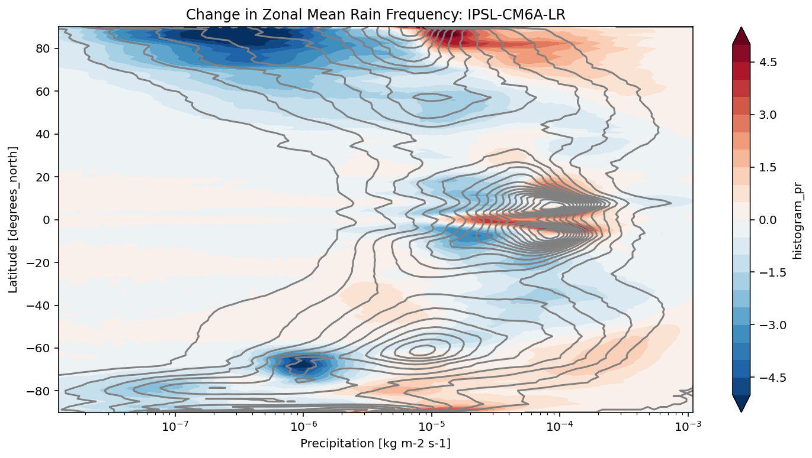

CMIP6 Precipitation Frequency Analysis¶
This notebook shows an advanced analysis case. The calculation was inspired by Angie Pendergrass’s work on precipitation statistics, as described in the following websites / papers:
https://journals.ametsoc.org/doi/full/10.1175/JCLI-D-16-0684.1
https://climatedataguide.ucar.edu/climate-data/gpcp-daily-global-precipitation-climatology-project
We use xhistogram to calculate the distribution of precipitation intensity and its changes in a warming climate.
import os
import fsspec
import numpy as np
import pandas as pd
import xarray as xr
from matplotlib import pyplot as plt
from tqdm.autonotebook import tqdm
from xhistogram.xarray import histogram
%matplotlib inline
plt.rcParams['figure.figsize'] = 12, 6
%config InlineBackend.figure_format = 'retina'
/srv/conda/envs/notebook/lib/python3.7/site-packages/ipykernel_launcher.py:8: TqdmExperimentalWarning: Using `tqdm.autonotebook.tqdm` in notebook mode. Use `tqdm.tqdm` instead to force console mode (e.g. in jupyter console)
Compute Cluster¶
Here we use a dask cluster to parallelize our analysis. The cluster scales up and down adaptively.
from dask.distributed import Client
from dask_gateway import Gateway
gateway = Gateway()
cluster = gateway.new_cluster()
cluster.adapt(minimum=1, maximum=20)
client = Client(cluster)
cluster
Load Data Catalog¶
df = pd.read_csv('https://storage.googleapis.com/cmip6/cmip6-zarr-consolidated-stores.csv')
df.head()
/srv/conda/envs/notebook/lib/python3.7/site-packages/IPython/core/interactiveshell.py:3146: DtypeWarning: Columns (10) have mixed types.Specify dtype option on import or set low_memory=False.
interactivity=interactivity, compiler=compiler, result=result)
| activity_id | institution_id | source_id | experiment_id | member_id | table_id | variable_id | grid_label | zstore | dcpp_init_year | version | |
|---|---|---|---|---|---|---|---|---|---|---|---|
| 0 | AerChemMIP | AS-RCEC | TaiESM1 | histSST | r1i1p1f1 | AERmon | od550aer | gn | gs://cmip6/AerChemMIP/AS-RCEC/TaiESM1/histSST/... | NaN | 20200310 |
| 1 | AerChemMIP | BCC | BCC-ESM1 | histSST | r1i1p1f1 | AERmon | mmrbc | gn | gs://cmip6/AerChemMIP/BCC/BCC-ESM1/histSST/r1i... | NaN | 20190718 |
| 2 | AerChemMIP | BCC | BCC-ESM1 | histSST | r1i1p1f1 | AERmon | mmrdust | gn | gs://cmip6/AerChemMIP/BCC/BCC-ESM1/histSST/r1i... | NaN | 20191127 |
| 3 | AerChemMIP | BCC | BCC-ESM1 | histSST | r1i1p1f1 | AERmon | mmroa | gn | gs://cmip6/AerChemMIP/BCC/BCC-ESM1/histSST/r1i... | NaN | 20190809 |
| 4 | AerChemMIP | BCC | BCC-ESM1 | histSST | r1i1p1f1 | AERmon | mmrso4 | gn | gs://cmip6/AerChemMIP/BCC/BCC-ESM1/histSST/r1i... | NaN | 20191127 |
df_3hr_pr = df[(df.table_id == '3hr') & (df.variable_id == 'pr')]
len(df_3hr_pr)
60
run_counts = df_3hr_pr.groupby(['source_id', 'experiment_id'])['zstore'].count()
run_counts
source_id experiment_id
BCC-CSM2-MR historical 1
ssp126 1
ssp245 1
ssp370 1
ssp585 1
CNRM-CM6-1 highresSST-present 1
historical 3
ssp126 1
ssp245 1
ssp370 1
ssp585 1
CNRM-CM6-1-HR highresSST-present 1
CNRM-ESM2-1 historical 1
ssp126 1
ssp245 1
ssp370 1
ssp585 1
GFDL-CM4C192 highresSST-present 1
GISS-E2-1-G historical 2
HadGEM3-GC31-HM highresSST-present 1
HadGEM3-GC31-LM highresSST-present 1
HadGEM3-GC31-MM highresSST-present 1
IPSL-CM6A-ATM-HR highresSST-present 1
IPSL-CM6A-LR highresSST-present 1
historical 15
piControl 1
ssp126 3
ssp245 2
ssp370 10
ssp585 1
MRI-ESM2-0 historical 1
Name: zstore, dtype: int64
source_ids = []
experiment_ids = ['historical', 'ssp585']
for name, group in df_3hr_pr.groupby('source_id'):
if all([expt in group.experiment_id.values for expt in experiment_ids]):
source_ids.append(name)
source_ids
['BCC-CSM2-MR', 'CNRM-CM6-1', 'CNRM-ESM2-1', 'IPSL-CM6A-LR']
def load_pr_data(source_id, expt_id):
"""
Load 3hr precip data for given source and expt ids
"""
uri = df_3hr_pr[(df_3hr_pr.source_id == source_id) & (df_3hr_pr.experiment_id == expt_id)].zstore.values[0]
ds = xr.open_zarr(fsspec.get_mapper(uri), consolidated=True)
return ds
def precip_hist(ds, nbins=100, pr_log_min=-3, pr_log_max=2):
"""
Calculate precipitation histogram for a single model.
Lazy.
"""
assert ds.pr.units == 'kg m-2 s-1'
# mm/day
bins_mm_day = np.hstack([[0], np.logspace(pr_log_min, pr_log_max, nbins)])
bins_kg_m2s = bins_mm_day / (24 * 60 * 60)
pr_hist = histogram(ds.pr, bins=[bins_kg_m2s], dim=['lon']).mean(dim='time')
log_bin_spacing = np.diff(np.log(bins_kg_m2s[1:3])).item()
pr_hist_norm = 100 * pr_hist / ds.dims['lon'] / log_bin_spacing
pr_hist_norm.attrs.update({'long_name': 'zonal mean rain frequency', 'units': '%/Δln(r)'})
return pr_hist_norm
def precip_hist_for_expts(dsets, experiment_ids):
"""
Calculate histogram for a suite of experiments.
Eager.
"""
# actual data loading and computations happen in this next line
pr_hists = [precip_hist(ds).load() for ds in [ds_hist, ds_ssp]]
pr_hist = xr.concat(pr_hists, dim=xr.Variable('experiment_id', experiment_ids))
return pr_hist
results = {}
for source_id in tqdm(source_ids):
# get a 20 year period
ds_hist = load_pr_data(source_id, 'historical').sel(time=slice('1980', '2000'))
ds_ssp = load_pr_data(source_id, 'ssp585').sel(time=slice('2080', '2100'))
pr_hist = precip_hist_for_expts([ds_hist, ds_ssp], experiment_ids)
results[source_id] = pr_hist
def plot_precip_changes(pr_hist, vmax=5):
"""
Visualize the output
"""
pr_hist_diff = pr_hist.sel(experiment_id='ssp585') - pr_hist.sel(experiment_id='historical')
pr_hist.sel(experiment_id='historical')[:, 1:].plot.contour(xscale='log', colors='0.5', levels=21)
pr_hist_diff[:, 1:].plot.contourf(xscale='log', vmax=vmax, levels=21)
title = 'Change in Zonal Mean Rain Frequency'
for source_id, pr_hist in results.items():
plt.figure()
plot_precip_changes(pr_hist)
plt.title(f'{title}: {source_id}')



